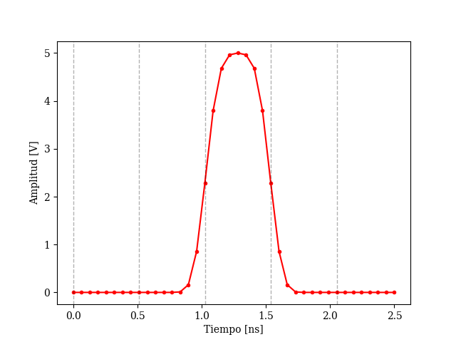

opticomlib.devices.DAC
- opticomlib.devices.DAC(input: str | list | tuple | ndarray | binary_sequence, Vout: float | None = None, pulse_shape: Literal['rect', 'gaussian'] = 'rect', **kargs)[source]
Digital-to-Analog Converter. Converts a binary sequence into an electrical signal, sampled at a frequency
fs.- Parameters:
input (str | list | tuple | ndarray | binary_sequence) – Input binary sequence.
Vout (float, Optional) – Output signal amplitude [-15 to 15 Volts]. (default: Vout=1.0)
pulse_shape (str, Optional) – Pulse shape at the output, can be “rect” or “gaussian”. (default: pulse_shape=”rect”)
- Keyword Arguments:
c (float) – Chirp of the Gaussian pulse. Only if pulse_shape=gaussian. (default: c=0.0)
m (int) – Order of the super-Gaussian pulse. Only if pulse_shape=gaussian. (default: m=1)
T (int) – Pulse width at half maximum in number of samples. Only if pulse_shape=gaussian. (default: T=sps)
- Returns:
The converted electrical signal.
- Return type:
- Raises:
TypeError – If input type is not in [str, list, tuple, ndarray, binary_sequence].
NameError – If pulse_shape is not “rect” or “gaussian”.
ValueError – If Vout is not between -15 and 15 Volts.
Example
>>> from opticomlib.typing import global_vars >>> from opticomlib.devices import DAC >>> import matplotlib.pyplot as plt >>> >>> global_vars(sps=8) # set samples per bit >>> >>> el_sig = DAC('0 0 1 0 0', Vout=5, pulse_shape='gaussian', m=2).print().plot('r.-').grid() signal : [-1.23381818e-16-2.22738516e-16j 6.16909091e-17-1.05272464e-16j 3.77856818e-16+3.15867786e-16j 1.30129261e-16-1.11127678e-16j -3.13522659e-16-1.41649623e-16j -8.08177643e-17+1.58454134e-16j -5.97961758e-17-2.14742015e-16j -3.46122447e-16-5.92476154e-16j -2.38883560e-16-1.06387143e-16j 1.25299722e-16+1.21935938e-16j 3.33675895e-11-2.89289740e-17j 2.68302800e-07-7.08598803e-18j 1.49408434e-04-5.72763272e-18j 1.04942785e-02+9.24140715e-17j 1.60416483e-01+2.67463542e-16j 8.58893815e-01+1.89368799e-16j 2.28523831e+00+4.84925496e-16j 3.79394843e+00+4.10134298e-16j 4.67939835e+00+4.35662674e-16j 4.96186576e+00+2.07554360e-16j 5.00000000e+00+0.00000000e+00j 4.96186576e+00+5.89390367e-16j 4.67939835e+00+1.13658240e-16j 3.79394843e+00+4.06283585e-16j 2.28523831e+00+1.97133487e-16j 8.58893815e-01+2.02443479e-16j 1.60416483e-01+1.40898933e-16j 1.04942785e-02+1.93072645e-16j 1.49408434e-04+9.28272207e-17j 2.68302799e-07-2.09299736e-16j 3.33672991e-11+8.00938377e-17j 3.95243922e-16+2.04687306e-16j 1.44481597e-16+1.47792739e-17j -2.48681540e-16+1.21935938e-16j -8.71750414e-17+1.84774604e-16j -1.41348280e-16+2.06617556e-16j -7.73094327e-17-1.12598266e-16j -1.73505682e-17+9.10904830e-17j -9.25363636e-17+3.54082838e-16j 3.08454545e-16+1.87892798e-16j] noise : [0.+0.j 0.+0.j 0.+0.j 0.+0.j 0.+0.j 0.+0.j 0.+0.j 0.+0.j 0.+0.j 0.+0.j 0.+0.j 0.+0.j 0.+0.j 0.+0.j 0.+0.j 0.+0.j 0.+0.j 0.+0.j 0.+0.j 0.+0.j 0.+0.j 0.+0.j 0.+0.j 0.+0.j 0.+0.j 0.+0.j 0.+0.j 0.+0.j 0.+0.j 0.+0.j 0.+0.j 0.+0.j 0.+0.j 0.+0.j 0.+0.j 0.+0.j 0.+0.j 0.+0.j 0.+0.j 0.+0.j] len : 40 power : 4.0e+00 W (35.99 dBm) size : 1872 bytes time : 0.0 >>>plt.show()